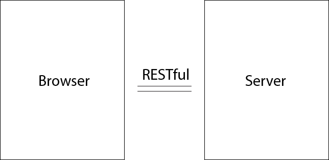
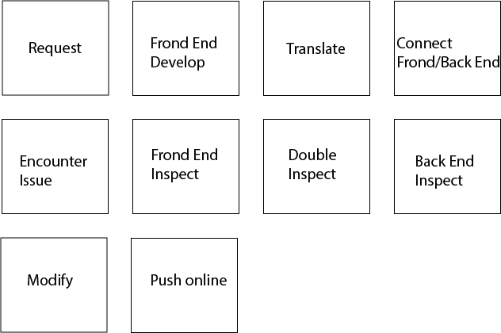
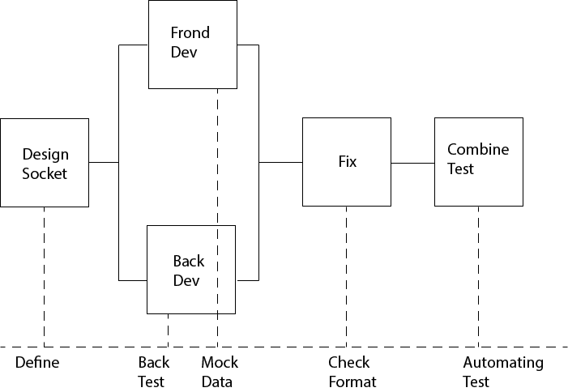

Frond-End and Back-End Split Practice
Since the development of the Nodejs is more popular now, many companies had applied the Nodejs technologies
to
their service.
For example, Alibaba companies applied the Nodejs on some of the insignificant work on the Back End.
Traditionally,
most programmers determine the browser to be the Frond End, and determine the operating server to be the
Back End.
For many people, they just hear about the concept of Frond-End and Back-End Split, there are still a
lot of
misunderstanding
on it. It is not simple as seperatign the Frond End and Back End development.
There are many different way to organize the code in four different pattern.
Interaction
The frond and back end render datas between the interaction on HTTP. Then, Frond End reorganizes the data from back end (API server) and return it back to servce
Code Organization

With the traditional MVC seperation of frond code and back code, it reduces the risk of the Mock test, and also ensure the usability of the API
Development model
The process of non using seperation of front and back

The process of using seperation of front and back, and it reduces many unnecessary steps
Data Interface
There are many debate about using seperation on Frond and Back End
If the companies want to help programmers to become a prefect team and increase the usability of
the code.
It is
better to have the seperation of Frond/Back End code